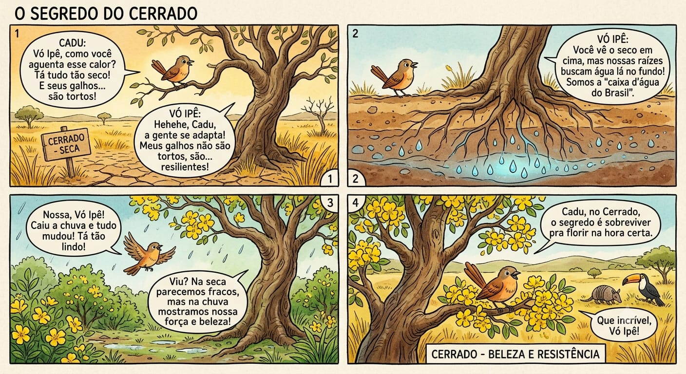

Quadrinhos originais que contam, com humor e afeto, a cultura, a natureza e o jeito de viver do Centro-Oeste brasileiro.

Nesta tirinha, o menino Cadu conversa com a Vó Ipê e aprende por que as árvores do Cerrado parecem “tortas” e resistem ao calor e à seca: suas raízes profundas buscam a água lá no fundo — afinal, o Cerrado é a “caixa d’água do Brasil”. Quando chega a chuva, tudo floresce. Uma lição sobre paciência, adaptação e a força do segundo maior bioma do país.
A turma do Cadu e da Vó Ipê volta toda semana com novas histórias sobre o Pantanal, o sertanejo, o pequi e a vida no Cerrado.